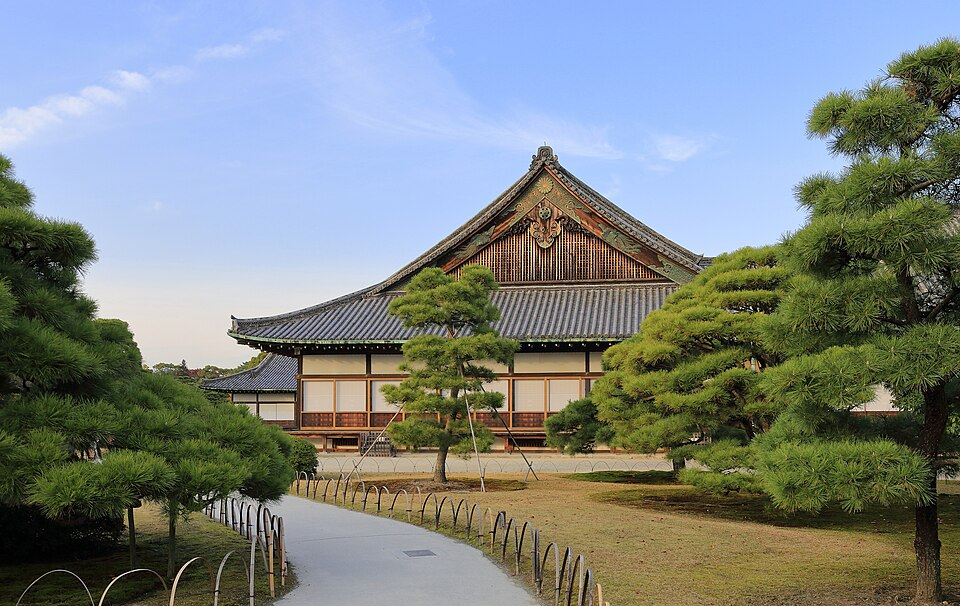
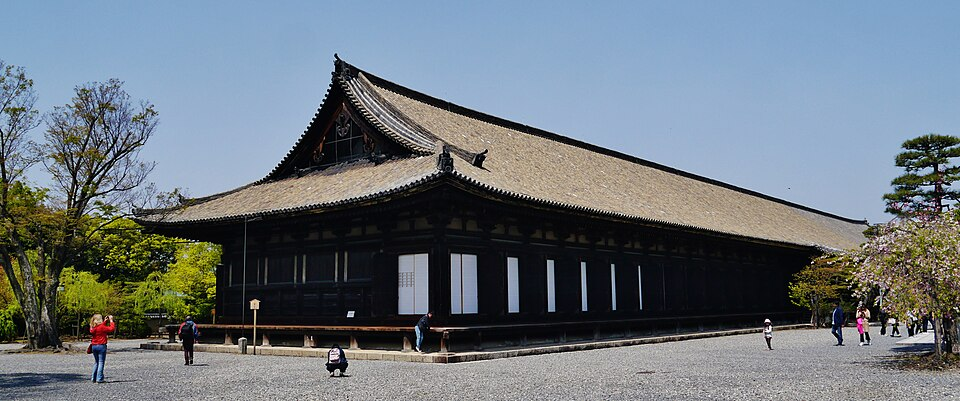
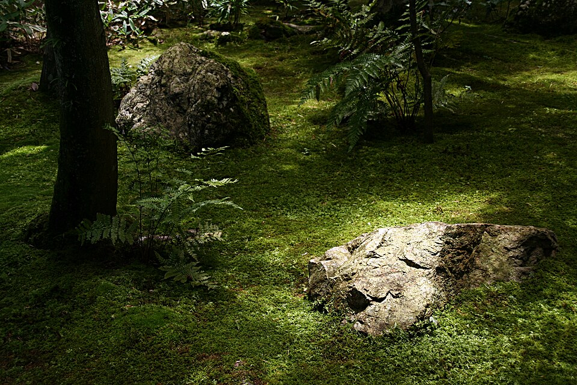
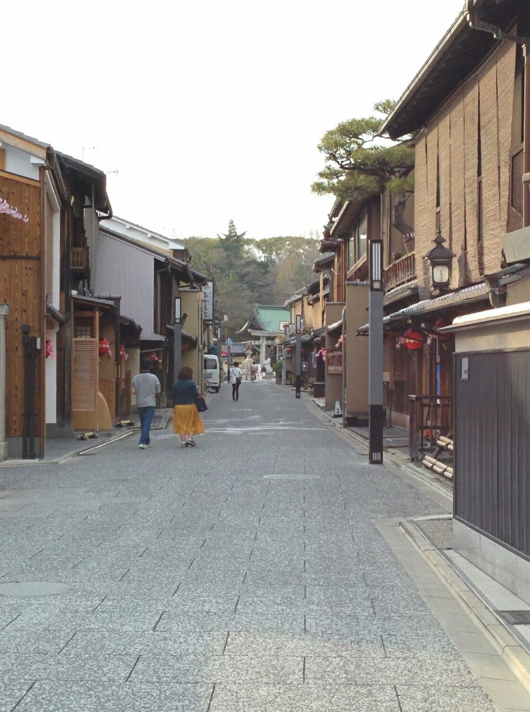
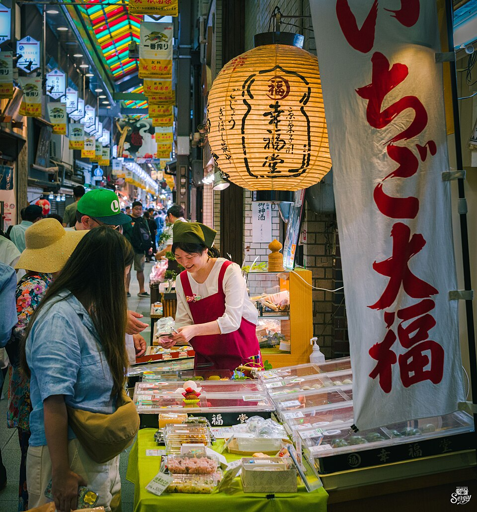
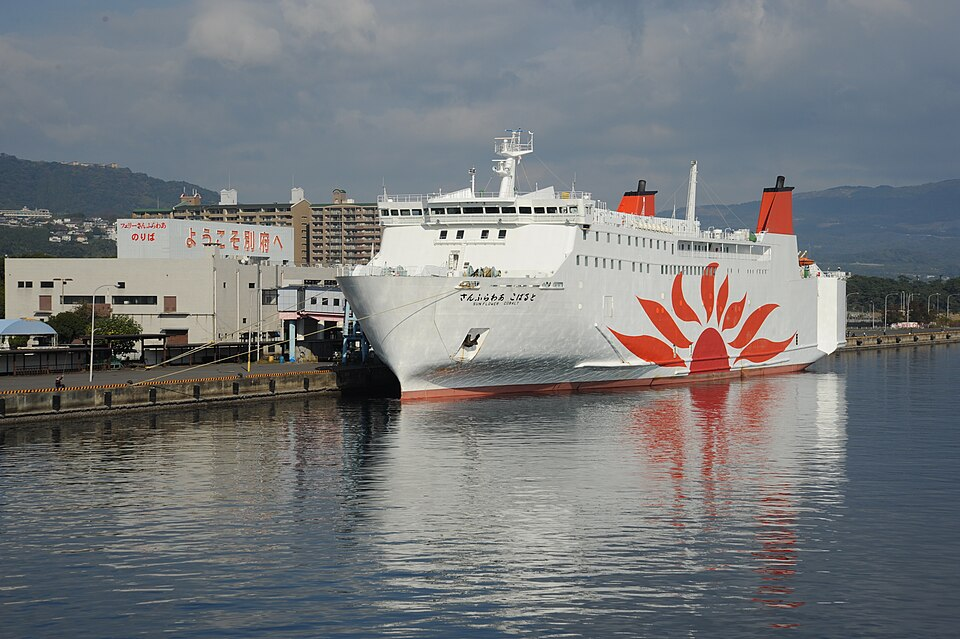
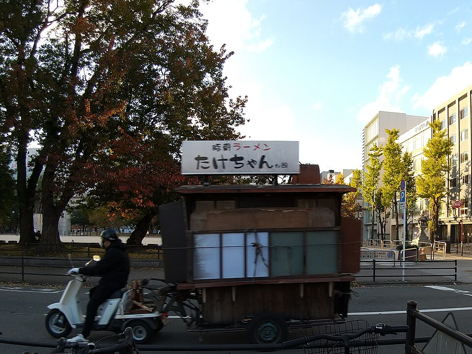
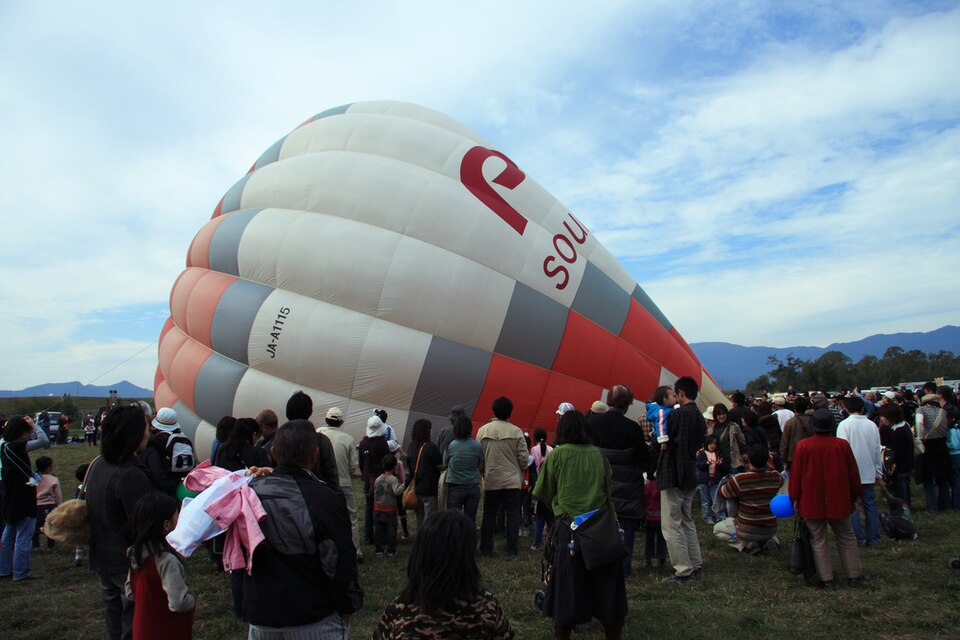

Как закончить поездку
Сплошная линия - поезд, пунктир - паром или поездка на день и обратно. Линия парома условная.
Сравнение
| 1. Гейзеры + выход через Fukuoka | 2. Домой раньше | 3. Всё и подольше | |
|---|---|---|---|
| Вылет из Японии | сб 31.10 (или вс 01.11) | вт 27.10 | ~04.11 |
| Kyoto / Osaka | 4 / 3 ночи | 4 / 4 ночи | 4 / 3 ночи |
| Гейзеры Beppu | ✅ 2 ночи + Yufuin | ❌ | ✅ |
| Fukuoka | 2 ночи: еда, вылет | ❌ | 6 ночей, фестивали |
| Смен отеля после Takayama | 4 (+ ночь на пароме) | 2 | 5 |
| Неделя в Barcelona до Web Summit | ✅ 01-08.11 | ✅ полторы недели | ❌ |
1. Гейзеры + выход через Fukuoka (рекомендую)
Погода: Open-Meteo, 18.10 00:20. Дожди в Kyoto 20-21 и в Osaka 24 и 26 попадают на дни под крышей и на работу.





| День | Где и что |
|---|---|
| пн 19 | Takayama → Kyoto Поезд через Nagoya 3 ч 05 - 3 ч 22, одна пересадка. После выезда из отеля в 10:00: 11:35 → 14:57 или 9:36 → 12:50. ☀️ Kyoto 0 мм, +27/+19 |
| вт 20 | Kyoto: залы и дворцы Дождь - день под крышей. Nijo-jo: дворец сёгунов, внутри «поющие» полы и росписи. Sanjusangen-do: зал длиной 120 м, 1001 статуя. Рядом рынок Nishiki (крытый). Полдня работа. 🌧 Kyoto 6 мм, +26/+21 |
| ср 21 | Kyoto: мох и старые кварталы Daitoku-ji: монастырь из 20+ малых храмов, сады смотрят с веранды под крышей, мох в дождь самый яркий (Koto-in, Daisen-in). Рядом Kamishichiken (старейший квартал гейш, туристов мало) и Nishijin (квартал ткачей, деревянные дома machiya). Это и есть «как живут». 🌧 Kyoto 12 мм, +28/+18 |
| чт 22 | Kyoto: сухой день Утром Fushimi Inari: тысячи ворот на гору, выше развилки Yotsutsuji людей в разы меньше. Днём в центре шествие эпох (Imperial Palace → Heian), этот район лучше обойти. Вечером Kurama не едем. ☀️ Kyoto 0 мм, +19/+11 |
| пт 23 | Kyoto → Nara → Osaka Будний день, сухо: Nara (47 мин из Kyoto) - олени и Todai-ji, один из самых больших деревянных храмов, внутри бронзовый Будда. Чемодан в камере на станции Kintetsu-Nara. Вечером Osaka Namba (39 мин). ☀️ Osaka 0 мм, +23/+11 |



| День | Где и что |
|---|---|
| сб 24 | Osaka: еда под крышей Ливень - и это не мешает: Tenjinbashisuji (торговая улица 2,6 км под крышей, местные izakaya), Музей быта Osaka (квартал эпохи Edo в натуральную величину, внутри). Вечер Dotonbori и Ura-Namba. 🌧 Osaka 25 мм, +22/+19 |
| вс 25 | Osaka Рынок Kuromon (морепродукты прямо с прилавка), Shinsekai (старый район 1910-х, kushikatsu), замок Osaka. 🌧 Osaka 5 мм, +26/+20 |
| пн 26 | Osaka → ночной паром Днём работа. Вечером паром Sunflower 19:05 → Beppu 06:55 (вс-чт; до терминала Osaka Nanko от Namba 39 мин). Ночь в каюте вместо отеля, на борту баня с видом на море. Корабли 2023 года. 🌧 Osaka 12 мм, +26/+19 |


| День | Где и что |
|---|---|
| вт 27 | Beppu: «ады» и гейзер С 8:00, пока нет туристических автобусов: «ады» в Kannawa - кобальтовый Umi, красный Chinoike, гейзер Tatsumaki (по обзорам бьёт раз в 30-40 минут). Полдня хватает. Дальше рёкан с горячим источником. 🌦 Beppu 1 мм, +23/+19 |
| ср 28 | Yufuin Поезд 58 мин без пересадок. Озеро Kinrin (тёплые источники на дне, в холодное утро над ним туман), деревня у горы Yufu. Вечер в онсэне. 🌦 Beppu 3 мм, +28/+19 |




| День | Где и что |
|---|---|
| чт 29 | Beppu → Fukuoka Поезд 1 ч 50. Вечером yatai у реки Naka: уличные кухни на 8-10 мест, где сидят плечом к плечу с местными. ☀️ Fukuoka 0 мм, +21/+14 |
| пт 30 | Fukuoka (шары по желанию) Если хочется: фестиваль шаров в Saga (первый день, утренний взлёт около 7:00, временная станция Balloon Saga 47 мин от Hakata). Рано и людно, но для жителя Испании это визуально новое. Иначе спокойный день: Ohori, Kushida, работа. ☀️ Fukuoka 0 мм, +20/+14 |
| сб 31 | Вылет из Fukuoka Аэропорт в 13 минутах метро от Hakata. Одна пересадка (Hong Kong, Seoul, Shanghai или Singapore), длинный перелёт 13-15 ч. В Barcelona 01-02.11, неделя с семьёй, 9.11 Lisbon. 🌦 Fukuoka 2 мм, +18/+13 |
2. Домой раньше
Если Японии уже хватает. Kyoto и Osaka, без гейзеров и юга.
| День | Где и что |
|---|---|
| пн 19 - пт 23 | Kyoto, 4 ночи Как в варианте 1: Nijo-jo, Sanjusangen-do, Daitoku-ji, Kamishichiken, утро в Fushimi Inari. |
| пт 23 - вт 27 | Osaka, 4 ночи Еда и выходные, день в Nara (будний пт 23 или пн 26). |
| вт 27 | Вылет из Osaka Osaka → Dubai 11 ч 20, Dubai → Barcelona 7 ч 35 (Emirates, Kiwi 13.10). В Barcelona ~28.10, полторы недели дома до Lisbon. |
3. Всё и подольше
Если Web Summit отпадает. Плюс Hiroshima и Miyajima, Fukuoka до фестивалей.


| День | Где и что |
|---|---|
| пн 19 - пн 26 | Kyoto + Osaka Как в варианте 1. |
| пн 26 - вт 27 | Hiroshima и Miyajima Из Osaka 1 ч 38. Атомный купол и музей, ворота в море на Miyajima (людно, но в будни меньше). |
| вт 27 - чт 29 | Beppu и Yufuin Из Hiroshima 2 ч 08. |
| чт 29 - ср 04.11 | Fukuoka Шары в Saga 30.10-03.11, Karatsu Kunchi 02-04.11 (шествие повозок, опять фестиваль и толпа). |
| ~04.11 | Вылет Web Summit 9-12.11 тогда без недели дома, или не ехать. |
Beppu на день из Osaka?
Нет. Поезд Shin-Osaka → Beppu 3 ч 34 в одну сторону (пересадка в Kokura), за день больше 7 часов в поезде. Удобнее ночной паром: вечером из Osaka, утром в Beppu, ночь на воде вместо отеля. Расписание с сайта перевозчика: Osaka 19:05 → Beppu 06:55 с воскресенья по четверг, в пт и сб 20:05 → 07:55. Обратно Beppu 18:45 → Osaka 06:35.
Fukuoka: да или нет?
Да, но коротко и не ради города. После Beppu до Fukuoka 1 ч 50, а обратно в Osaka 3,5 часа. Аэропорт Fukuoka в 13 минутах от Hakata, международные рейсы через Seoul, Hong Kong, Shanghai, Singapore. Два вечера: yatai у реки и рамен Hakata. Шары в Saga - только если захочется рано встать.
Как лететь домой из Fukuoka
| Маршрут (Kiwi, 31.10-01.11) | Длинный перелёт | Всего в пути |
|---|---|---|
| Fukuoka → Shanghai → Barcelona (China Eastern) | 13 ч 20 | 21 ч 25 |
| Fukuoka → Hong Kong → Madrid → Barcelona (Cathay) | 14 ч 50 | 28 ч 10 |
| Fukuoka → Singapore → Barcelona (Singapore Airlines) | 14 ч 10 | 29 ч 10 |
| Fukuoka → Seoul, ночь → Barcelona (T'way) | 14 ч 55 | с ночёвкой в Seoul |
| Для сравнения: Osaka → Dubai → Barcelona (Emirates, Kiwi 13.10) | 11 ч 20 + 7 ч 35 | можно 1-2 ночи в Dubai |
Прямых рейсов из Fukuoka в Европу Kiwi на эти даты не показывает. Цены не смотрел. Транзит через Shanghai - перед покупкой проверю правила для твоего паспорта.
Что бронировать в варианте 1
1. Отель Kyoto 19-23.10 (во всех вариантах одинаково, неделя фестиваля).
2. Отель Osaka 23-26.10 (из Marriott дешевле всех Fairfield Namba).
3. Паром Osaka → Beppu пн 26.10, отдельная каюта.
4. Рёкан в Beppu 27-29.10, тихий.
5. Отель Fukuoka 29-31.10 у Hakata.
6. Перелёт 31.10 или 01.11.
Поезда: Yahoo!乗換案内, запросы 18.10 00:30. Паром: ferry-sunflower.co.jp, 18.10. Погода: Open-Meteo, 18.10 00:20. Перелёты: Kiwi.com, 18.10, только время. Kurama: данные из списка фестивалей 14.10. Фото: Wikimedia Commons, автор и лицензия под каждым. Карта: Esri. Ничего не бронировалось.